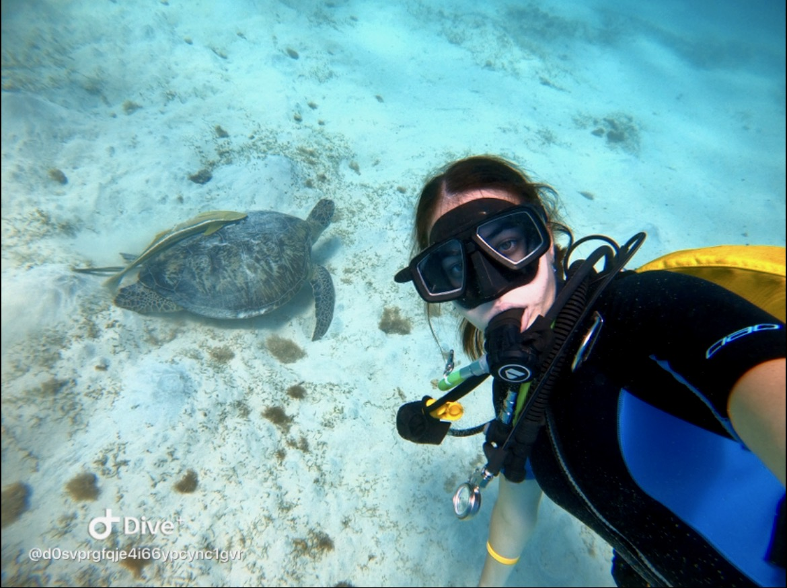

About me
Hi! My name is Maria Maiorescu.
I am a student at UVT (West University of Timișoara), enrolled in the Web Design course in 2026.
Hobbies
I love scuba diving — there's something peaceful about the underwater world that fits my quiet personality perfectly. I also enjoy hiking, cycling and sailing, especially when I need fresh air and a clear mind. I'm happiest when I'm travelling, discovering new places, or curled up reading something that makes me think. I may be introverted, but I'm always exploring — whether it's a new country or a new story.
Goal for this course
My goal in the Web Design course is to gain a solid understanding of how modern websites are structured and built, so that I can confidently create clean, well-organized, and functional web pages from scratch.
Photo
